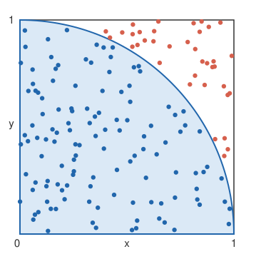

Measure, split, move less data
Make real code faster, and prove what the whole program gained:
This is the project.
| theme | decks | activities | |
|---|---|---|---|
| 1 | Measure | 0 · 1 · 2 | loop cost · diagnosis |
| 2 | Split | 3 | waits · race · π in lots |
| 3 | Move less | 4 · 5 · synthesis | locality · batching · π on the card |
Timed plan: two 10-minute breaks per session.

Monte-Carlo π: draw points, count those in the quarter disk, multiply by 4.
Note
Every number comes with its card. We compare ratios on the same machine.
Next: 0 — Julia for Python users ➡
Know where the time goes, then test your explanation.
For each: which optimization, why, and the next measurement?
Name the result to preserve, the dominant cost, and which measurement could prove you wrong.
Before leaving, each group writes one timing and one hypothesis.
⬅ 5 — GPU · Course page · Project rules